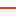
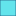
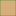

<!doctype html>
<html lang="en">
    <head>
        <meta charset="utf-8">
        <meta http-equiv="X-UA-Compatible" content="IE=edge">
        <meta name="viewport" content="initial-scale=1,user-scalable=no,maximum-scale=1,width=device-width">
        <meta name="mobile-web-app-capable" content="yes">
        <meta name="apple-mobile-web-app-capable" content="yes">
        <link rel="stylesheet" href="css/leaflet.css">
        <link rel="stylesheet" href="css/qgis2web.css"><link rel="stylesheet" href="css/fontawesome-all.min.css">
        <link rel="stylesheet" href="css/leaflet-control-geocoder.Geocoder.css">
        <style>
        html, body, #map {
            width: 100%;
            height: 100%;
            padding: 0;
            margin: 0;
        }
        </style>
        <title>Cartographie du Parc National des Pyrénées</title>
    </head>
    <body>
        <div id="map">
        </div>
        <script src="js/qgis2web_expressions.js"></script>
        <script src="js/leaflet.js"></script>
        <script src="js/leaflet.rotatedMarker.js"></script>
        <script src="js/leaflet.pattern.js"></script>
        <script src="js/leaflet-hash.js"></script>
        <script src="js/Autolinker.min.js"></script>
        <script src="js/rbush.min.js"></script>
        <script src="js/labelgun.min.js"></script>
        <script src="js/labels.js"></script>
        <script src="js/leaflet-control-geocoder.Geocoder.js"></script>
        <script src="data/PNP_zone_optimale_adhesion_1.js"></script>
        <script src="data/PNP_zone_adhesion_2.js"></script>
        <script src="data/PNP_secteurs_3.js"></script>
        <script src="data/PNP_zone_coeur_4.js"></script>
        <script src="data/PNP_plans_eau_5.js"></script>
        <script src="data/PNP_refuges_6.js"></script>
        <script src="data/PNP_maisons_du_parc_7.js"></script>
        <script src="data/PNP_sentiers_8.js"></script>
        <script src="data/PNP_limites_parc_toutes_zones_9.js"></script>
        <script>
        var map = L.map('map', {
            zoomControl:true, maxZoom:28, minZoom:1
        }).fitBounds([[42.55788396457619,-0.9591947071669784],[43.27852981306264,0.7423048093332162]]);
        var hash = new L.Hash(map);
        map.attributionControl.setPrefix('<a href="https://github.com/tomchadwin/qgis2web" target="_blank">qgis2web</a> &middot; <a href="https://leafletjs.com" title="A JS library for interactive maps">Leaflet</a> &middot; <a href="https://qgis.org">QGIS</a>');
        var autolinker = new Autolinker({truncate: {length: 30, location: 'smart'}});
        var bounds_group = new L.featureGroup([]);
        function setBounds() {
        }
        map.createPane('pane_OpenStreetMap_0');
        map.getPane('pane_OpenStreetMap_0').style.zIndex = 400;
        var layer_OpenStreetMap_0 = L.tileLayer('https://tile.openstreetmap.org/{z}/{x}/{y}.png', {
            pane: 'pane_OpenStreetMap_0',
            opacity: 1.0,
            attribution: '',
            minZoom: 1,
            maxZoom: 28,
            minNativeZoom: 0,
            maxNativeZoom: 19
        });
        layer_OpenStreetMap_0;
        map.addLayer(layer_OpenStreetMap_0);
        function pop_PNP_zone_optimale_adhesion_1(feature, layer) {
            var popupContent = '<table>\
                    <tr>\
                        <td colspan="2"><strong>zone_optimale_adhesion</strong><br />' + (feature.properties['ID'] !== null ? autolinker.link(feature.properties['ID'].toLocaleString()) : '') + '</td>\
                    </tr>\
                    <tr>\
                        <td colspan="2"><strong>Libellé</strong><br />' + (feature.properties['Libellé'] !== null ? autolinker.link(feature.properties['Libellé'].toLocaleString()) : '') + '</td>\
                    </tr>\
                </table>';
            layer.bindPopup(popupContent, {maxHeight: 400});
        }

        function style_PNP_zone_optimale_adhesion_1_0() {
            return {
                pane: 'pane_PNP_zone_optimale_adhesion_1',
                opacity: 1,
                color: 'rgba(56,128,54,1.0)',
                dashArray: '',
                lineCap: 'butt',
                lineJoin: 'miter',
                weight: 1.0, 
                fill: true,
                fillOpacity: 1,
                fillColor: 'rgba(180,111,15,1.0)',
                interactive: true,
            }
        }
        map.createPane('pane_PNP_zone_optimale_adhesion_1');
        map.getPane('pane_PNP_zone_optimale_adhesion_1').style.zIndex = 401;
        map.getPane('pane_PNP_zone_optimale_adhesion_1').style['mix-blend-mode'] = 'normal';
        var layer_PNP_zone_optimale_adhesion_1 = new L.geoJson(json_PNP_zone_optimale_adhesion_1, {
            attribution: '',
            interactive: true,
            dataVar: 'json_PNP_zone_optimale_adhesion_1',
            layerName: 'layer_PNP_zone_optimale_adhesion_1',
            pane: 'pane_PNP_zone_optimale_adhesion_1',
            onEachFeature: pop_PNP_zone_optimale_adhesion_1,
            style: style_PNP_zone_optimale_adhesion_1_0,
        });
        bounds_group.addLayer(layer_PNP_zone_optimale_adhesion_1);
        map.addLayer(layer_PNP_zone_optimale_adhesion_1);
        function pop_PNP_zone_adhesion_2(feature, layer) {
            var popupContent = '<table>\
                    <tr>\
                        <td colspan="2"><strong>id</strong><br />' + (feature.properties['id'] !== null ? autolinker.link(feature.properties['id'].toLocaleString()) : '') + '</td>\
                    </tr>\
                    <tr>\
                        <td colspan="2"><strong>zone_adhesion</strong><br />' + (feature.properties['nom'] !== null ? autolinker.link(feature.properties['nom'].toLocaleString()) : '') + '</td>\
                    </tr>\
                </table>';
            layer.bindPopup(popupContent, {maxHeight: 400});
        }

        function style_PNP_zone_adhesion_2_0() {
            return {
                pane: 'pane_PNP_zone_adhesion_2',
                opacity: 1,
                color: 'rgba(255,255,54,0.0)',
                dashArray: '',
                lineCap: 'butt',
                lineJoin: 'miter',
                weight: 1.0, 
                fill: true,
                fillOpacity: 1,
                fillColor: 'rgba(77,175,74,1.0)',
                interactive: true,
            }
        }
        map.createPane('pane_PNP_zone_adhesion_2');
        map.getPane('pane_PNP_zone_adhesion_2').style.zIndex = 402;
        map.getPane('pane_PNP_zone_adhesion_2').style['mix-blend-mode'] = 'normal';
        var layer_PNP_zone_adhesion_2 = new L.geoJson(json_PNP_zone_adhesion_2, {
            attribution: '',
            interactive: true,
            dataVar: 'json_PNP_zone_adhesion_2',
            layerName: 'layer_PNP_zone_adhesion_2',
            pane: 'pane_PNP_zone_adhesion_2',
            onEachFeature: pop_PNP_zone_adhesion_2,
            style: style_PNP_zone_adhesion_2_0,
        });
        bounds_group.addLayer(layer_PNP_zone_adhesion_2);
        map.addLayer(layer_PNP_zone_adhesion_2);
        function pop_PNP_secteurs_3(feature, layer) {
            var popupContent = '<table>\
                    <tr>\
                        <td colspan="2"><strong>Secteur</strong><br />' + (feature.properties['Nom'] !== null ? autolinker.link(feature.properties['Nom'].toLocaleString()) : '') + '</td>\
                    </tr>\
                </table>';
            layer.bindPopup(popupContent, {maxHeight: 400});
        }

        function style_PNP_secteurs_3_0() {
            return {
                pane: 'pane_PNP_secteurs_3',
                opacity: 1,
                color: 'rgba(255,255,54,1.0)',
                dashArray: '',
                lineCap: 'butt',
                lineJoin: 'miter',
                weight: 1.0, 
                fill: true,
                fillOpacity: 1,
                fillColor: 'rgba(255,34,0,0.0)',
                interactive: true,
            }
        }
        map.createPane('pane_PNP_secteurs_3');
        map.getPane('pane_PNP_secteurs_3').style.zIndex = 403;
        map.getPane('pane_PNP_secteurs_3').style['mix-blend-mode'] = 'normal';
        var layer_PNP_secteurs_3 = new L.geoJson(json_PNP_secteurs_3, {
            attribution: '',
            interactive: true,
            dataVar: 'json_PNP_secteurs_3',
            layerName: 'layer_PNP_secteurs_3',
            pane: 'pane_PNP_secteurs_3',
            onEachFeature: pop_PNP_secteurs_3,
            style: style_PNP_secteurs_3_0,
        });
        bounds_group.addLayer(layer_PNP_secteurs_3);
        map.addLayer(layer_PNP_secteurs_3);
        function pop_PNP_zone_coeur_4(feature, layer) {
            var popupContent = '<table>\
                    <tr>\
                        <td colspan="2"><strong>id</strong><br />' + (feature.properties['id'] !== null ? autolinker.link(feature.properties['id'].toLocaleString()) : '') + '</td>\
                    </tr>\
                    <tr>\
                        <td colspan="2"><strong>zone_coeur</strong><br />' + (feature.properties['nom'] !== null ? autolinker.link(feature.properties['nom'].toLocaleString()) : '') + '</td>\
                    </tr>\
                </table>';
            layer.bindPopup(popupContent, {maxHeight: 400});
        }

        function style_PNP_zone_coeur_4_0() {
            return {
                pane: 'pane_PNP_zone_coeur_4',
                opacity: 1,
                color: 'rgba(128,14,16,1.0)',
                dashArray: '',
                lineCap: 'butt',
                lineJoin: 'miter',
                weight: 1.0, 
                fill: true,
                fillOpacity: 1,
                fillColor: 'rgba(228,26,28,0.4980392156862745)',
                interactive: true,
            }
        }
        map.createPane('pane_PNP_zone_coeur_4');
        map.getPane('pane_PNP_zone_coeur_4').style.zIndex = 404;
        map.getPane('pane_PNP_zone_coeur_4').style['mix-blend-mode'] = 'normal';
        var layer_PNP_zone_coeur_4 = new L.geoJson(json_PNP_zone_coeur_4, {
            attribution: '',
            interactive: true,
            dataVar: 'json_PNP_zone_coeur_4',
            layerName: 'layer_PNP_zone_coeur_4',
            pane: 'pane_PNP_zone_coeur_4',
            onEachFeature: pop_PNP_zone_coeur_4,
            style: style_PNP_zone_coeur_4_0,
        });
        bounds_group.addLayer(layer_PNP_zone_coeur_4);
        map.addLayer(layer_PNP_zone_coeur_4);
        function pop_PNP_plans_eau_5(feature, layer) {
            var popupContent = '<table>\
                    <tr>\
                        <td colspan="2"><strong>Nature</strong><br />' + (feature.properties['NATURE'] !== null ? autolinker.link(feature.properties['NATURE'].toLocaleString()) : '') + '</td>\
                    </tr>\
                    <tr>\
                        <td colspan="2"><strong>TOPONYME</strong><br />' + (feature.properties['TOPONYME'] !== null ? autolinker.link(feature.properties['TOPONYME'].toLocaleString()) : '') + '</td>\
                    </tr>\
                    <tr>\
                        <td colspan="2"><strong>Superficie</strong><br />' + (feature.properties['SUPERFICIE'] !== null ? autolinker.link(feature.properties['SUPERFICIE'].toLocaleString()) : '') + '</td>\
                    </tr>\
                    <tr>\
                        <td colspan="2"><strong>area</strong><br />' + (feature.properties['area_ha'] !== null ? autolinker.link(feature.properties['area_ha'].toLocaleString()) : '') + '</td>\
                    </tr>\
                </table>';
            layer.bindPopup(popupContent, {maxHeight: 400});
        }

        function style_PNP_plans_eau_5_0() {
            return {
                pane: 'pane_PNP_plans_eau_5',
                opacity: 1,
                color: 'rgba(38,89,128,1.0)',
                dashArray: '',
                lineCap: 'butt',
                lineJoin: 'miter',
                weight: 1.0, 
                fill: true,
                fillOpacity: 1,
                fillColor: 'rgba(60,223,233,1.0)',
                interactive: true,
            }
        }
        map.createPane('pane_PNP_plans_eau_5');
        map.getPane('pane_PNP_plans_eau_5').style.zIndex = 405;
        map.getPane('pane_PNP_plans_eau_5').style['mix-blend-mode'] = 'normal';
        var layer_PNP_plans_eau_5 = new L.geoJson(json_PNP_plans_eau_5, {
            attribution: '',
            interactive: true,
            dataVar: 'json_PNP_plans_eau_5',
            layerName: 'layer_PNP_plans_eau_5',
            pane: 'pane_PNP_plans_eau_5',
            onEachFeature: pop_PNP_plans_eau_5,
            style: style_PNP_plans_eau_5_0,
        });
        bounds_group.addLayer(layer_PNP_plans_eau_5);
        map.addLayer(layer_PNP_plans_eau_5);
        function pop_PNP_refuges_6(feature, layer) {
            var popupContent = '<table>\
                    <tr>\
                        <td colspan="2"><strong>Propriete</strong><br />' + (feature.properties['Propriete'] !== null ? autolinker.link(feature.properties['Propriete'].toLocaleString()) : '') + '</td>\
                    </tr>\
                    <tr>\
                        <td colspan="2"><strong>Nom</strong><br />' + (feature.properties['Nom'] !== null ? autolinker.link(feature.properties['Nom'].toLocaleString()) : '') + '</td>\
                    </tr>\
                </table>';
            layer.bindPopup(popupContent, {maxHeight: 400});
        }

        function style_PNP_refuges_6_0() {
            return {
                pane: 'pane_PNP_refuges_6',
                radius: 4.0,
                opacity: 1,
                color: 'rgba(35,35,35,1.0)',
                dashArray: '',
                lineCap: 'butt',
                lineJoin: 'miter',
                weight: 1,
                fill: true,
                fillOpacity: 1,
                fillColor: 'rgba(141,90,153,1.0)',
                interactive: true,
            }
        }
        map.createPane('pane_PNP_refuges_6');
        map.getPane('pane_PNP_refuges_6').style.zIndex = 406;
        map.getPane('pane_PNP_refuges_6').style['mix-blend-mode'] = 'normal';
        var layer_PNP_refuges_6 = new L.geoJson(json_PNP_refuges_6, {
            attribution: '',
            interactive: true,
            dataVar: 'json_PNP_refuges_6',
            layerName: 'layer_PNP_refuges_6',
            pane: 'pane_PNP_refuges_6',
            onEachFeature: pop_PNP_refuges_6,
            pointToLayer: function (feature, latlng) {
                var context = {
                    feature: feature,
                    variables: {}
                };
                return L.circleMarker(latlng, style_PNP_refuges_6_0(feature));
            },
        });
        bounds_group.addLayer(layer_PNP_refuges_6);
        map.addLayer(layer_PNP_refuges_6);
        function pop_PNP_maisons_du_parc_7(feature, layer) {
            var popupContent = '<table>\
                    <tr>\
                        <th scope="row">maisons_du_parc</th>\
                        <td>' + (feature.properties['Nom'] !== null ? autolinker.link(feature.properties['Nom'].toLocaleString()) : '') + '</td>\
                    </tr>\
                </table>';
            layer.bindPopup(popupContent, {maxHeight: 400});
        }

        function style_PNP_maisons_du_parc_7_0() {
            return {
                pane: 'pane_PNP_maisons_du_parc_7',
                radius: 4.0,
                opacity: 1,
                color: 'rgba(35,35,35,1.0)',
                dashArray: '',
                lineCap: 'butt',
                lineJoin: 'miter',
                weight: 1,
                fill: true,
                fillOpacity: 1,
                fillColor: 'rgba(232,113,141,1.0)',
                interactive: true,
            }
        }
        map.createPane('pane_PNP_maisons_du_parc_7');
        map.getPane('pane_PNP_maisons_du_parc_7').style.zIndex = 407;
        map.getPane('pane_PNP_maisons_du_parc_7').style['mix-blend-mode'] = 'normal';
        var layer_PNP_maisons_du_parc_7 = new L.geoJson(json_PNP_maisons_du_parc_7, {
            attribution: '',
            interactive: true,
            dataVar: 'json_PNP_maisons_du_parc_7',
            layerName: 'layer_PNP_maisons_du_parc_7',
            pane: 'pane_PNP_maisons_du_parc_7',
            onEachFeature: pop_PNP_maisons_du_parc_7,
            pointToLayer: function (feature, latlng) {
                var context = {
                    feature: feature,
                    variables: {}
                };
                return L.circleMarker(latlng, style_PNP_maisons_du_parc_7_0(feature));
            },
        });
        bounds_group.addLayer(layer_PNP_maisons_du_parc_7);
        map.addLayer(layer_PNP_maisons_du_parc_7);
        function pop_PNP_sentiers_8(feature, layer) {
            var popupContent = '<table>\
                    <tr>\
                        <td colspan="2"><strong>sentiers</strong><br />' + (feature.properties['IDPNP'] !== null ? autolinker.link(feature.properties['IDPNP'].toLocaleString()) : '') + '</td>\
                    </tr>\
                </table>';
            layer.bindPopup(popupContent, {maxHeight: 400});
        }

        function style_PNP_sentiers_8_0() {
            return {
                pane: 'pane_PNP_sentiers_8',
                opacity: 1,
                color: 'rgba(255,255,255,1.0)',
                dashArray: '',
                lineCap: 'square',
                lineJoin: 'bevel',
                weight: 1.0,
                fillOpacity: 0,
                interactive: true,
            }
        }
        map.createPane('pane_PNP_sentiers_8');
        map.getPane('pane_PNP_sentiers_8').style.zIndex = 408;
        map.getPane('pane_PNP_sentiers_8').style['mix-blend-mode'] = 'normal';
        var layer_PNP_sentiers_8 = new L.geoJson(json_PNP_sentiers_8, {
            attribution: '',
            interactive: true,
            dataVar: 'json_PNP_sentiers_8',
            layerName: 'layer_PNP_sentiers_8',
            pane: 'pane_PNP_sentiers_8',
            onEachFeature: pop_PNP_sentiers_8,
            style: style_PNP_sentiers_8_0,
        });
        bounds_group.addLayer(layer_PNP_sentiers_8);
        map.addLayer(layer_PNP_sentiers_8);
        function pop_PNP_limites_parc_toutes_zones_9(feature, layer) {
            var popupContent = '<table>\
                    <tr>\
                        <td colspan="2">' + (feature.properties['id'] !== null ? autolinker.link(feature.properties['id'].toLocaleString()) : '') + '</td>\
                    </tr>\
                    <tr>\
                        <td colspan="2">' + (feature.properties['nom'] !== null ? autolinker.link(feature.properties['nom'].toLocaleString()) : '') + '</td>\
                    </tr>\
                </table>';
            layer.bindPopup(popupContent, {maxHeight: 400});
        }

        function style_PNP_limites_parc_toutes_zones_9_0() {
            return {
                pane: 'pane_PNP_limites_parc_toutes_zones_9',
                opacity: 1,
                color: 'rgba(228,30,0,1.0)',
                dashArray: '',
                lineCap: 'square',
                lineJoin: 'bevel',
                weight: 2.0,
                fillOpacity: 0,
                interactive: true,
            }
        }
        map.createPane('pane_PNP_limites_parc_toutes_zones_9');
        map.getPane('pane_PNP_limites_parc_toutes_zones_9').style.zIndex = 409;
        map.getPane('pane_PNP_limites_parc_toutes_zones_9').style['mix-blend-mode'] = 'normal';
        var layer_PNP_limites_parc_toutes_zones_9 = new L.geoJson(json_PNP_limites_parc_toutes_zones_9, {
            attribution: '',
            interactive: true,
            dataVar: 'json_PNP_limites_parc_toutes_zones_9',
            layerName: 'layer_PNP_limites_parc_toutes_zones_9',
            pane: 'pane_PNP_limites_parc_toutes_zones_9',
            onEachFeature: pop_PNP_limites_parc_toutes_zones_9,
            style: style_PNP_limites_parc_toutes_zones_9_0,
        });
        bounds_group.addLayer(layer_PNP_limites_parc_toutes_zones_9);
        map.addLayer(layer_PNP_limites_parc_toutes_zones_9);
            var title = new L.Control();
            title.onAdd = function (map) {
                this._div = L.DomUtil.create('div', 'info');
                this.update();
                return this._div;
            };
            title.update = function () {
                this._div.innerHTML = '<h2>Cartographie du Parc National des Pyrénées</h2>';
            };
            title.addTo(map);
        var osmGeocoder = new L.Control.Geocoder({
            collapsed: true,
            position: 'topleft',
            text: 'Search',
            title: 'Testing'
        }).addTo(map);
        document.getElementsByClassName('leaflet-control-geocoder-icon')[0]
        .className += ' fa fa-search';
        document.getElementsByClassName('leaflet-control-geocoder-icon')[0]
        .title += 'Search for a place';
        var baseMaps = {};
        L.control.layers(baseMaps,{' PNP_limites_parc_toutes_zones': layer_PNP_limites_parc_toutes_zones_9,' PNP_sentiers': layer_PNP_sentiers_8,' PNP_maisons_du_parc': layer_PNP_maisons_du_parc_7,' PNP_refuges': layer_PNP_refuges_6,' PNP_plans_eau': layer_PNP_plans_eau_5,' PNP_zone_coeur': layer_PNP_zone_coeur_4,' PNP_secteurs': layer_PNP_secteurs_3,' PNP_zone_adhesion': layer_PNP_zone_adhesion_2,' PNP_zone_optimale_adhesion': layer_PNP_zone_optimale_adhesion_1,"OpenStreetMap": layer_OpenStreetMap_0,},{collapsed:false}).addTo(map);
        setBounds();
        </script>
    </body>
</html>
